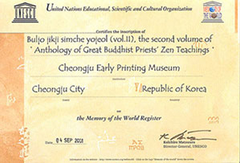

세계속의 직지
세계 기록 유산 직지

직지를 세계기록유산에 등재시켜야 한다는 의견은 1996년 유네스코 충북협회의 유네스코와 고인쇄문화라는 학술세미나에서 처음으로 제기되었다. 이 학술세미나에서의 결론은 청주지역이 고인쇄출판 문화의 도시이며, 직지야말로 세계적인 가치가 있는 기록유산인 만큼 세계기록유산에 등재시킬 수 있도록 노력해야 한다는 것이었다.
청주시, 청주고인쇄박물관, 유네스코 한국위원회, 유네스코 충청북도협회 등을 비롯한 관계기관들의 부단한 노력에 의하여 2001년 6월27∼29일까지 청주서 열린 제 5차 유네스코 세계기록유산 국제자문위원회의 심사에 세계 23개국 기록유산 42점이 심의 목록에 올랐고, 2001년 9월 4일에 직지는 세계기록유산에 등재되었다.
직지
세계 최고의 금속활자본 직지심체요절 알아보기
직지홍보단
직지를 해외에 바로 홍보할 수 있는
홍보단으로 변화시켜 나갑니다.
어떤 유물이고 어떤 가치를 지니고 있는지 잘 모르시는 분이 많으실 것입니다. 지금부터 직지와 그 가치에 대해서 좀
더 배우고, 많은 분들이 직지에 대해서 잘못 알고 있는 점은 무엇인지 질문과 대답 형식을 통해서 알아보도록 해요.